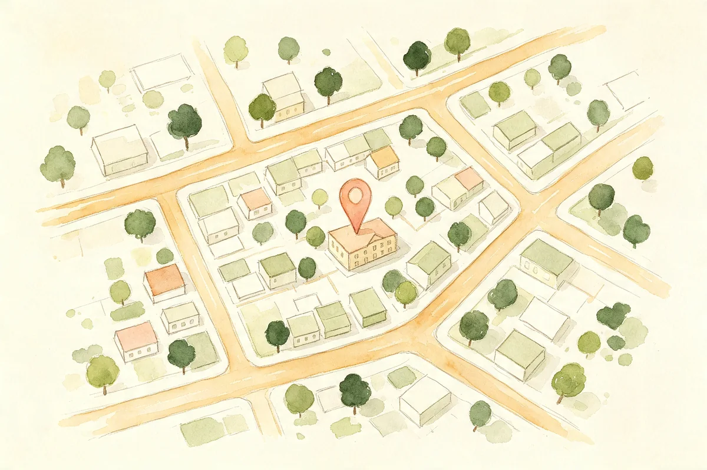

回复出席
2027 年 11 月 29 日 · 居銮 津津酒家
怎么去
居銮 津津酒家

用 Google 地图导航Hui Huang & Mayyi · 2027.11.29
告诉我们你会来,让这天更圆满
十一月廿九,穿过这道花拱,来入席
2027.11.29 · 居銮 津津酒家
像池水映花,一些片刻,想留给你看
放慢脚步,让花香陪你往里走
诚邀你,走进这座为爱而开的花园
Hui Huang & Mayyi · 2027.11.29
2027 年 11 月 29 日 · 居銮 津津酒家
居銮 津津酒家

用 Google 地图导航Hui Huang & Mayyi · 2027.11.29